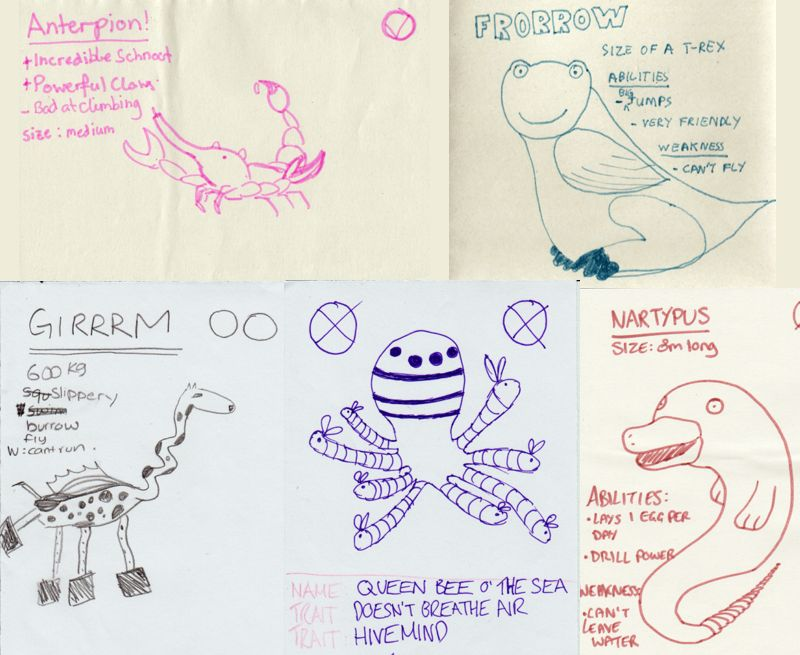
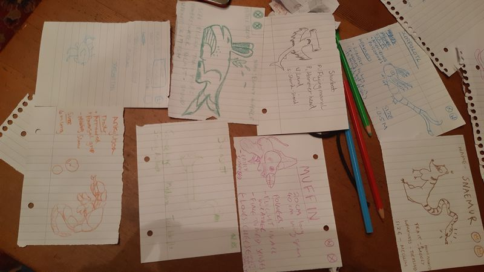
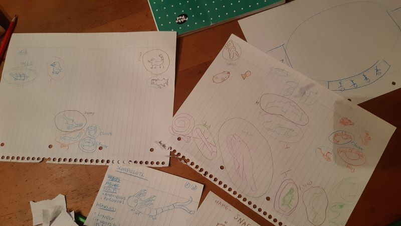
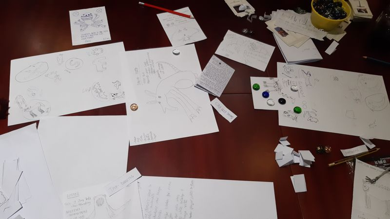
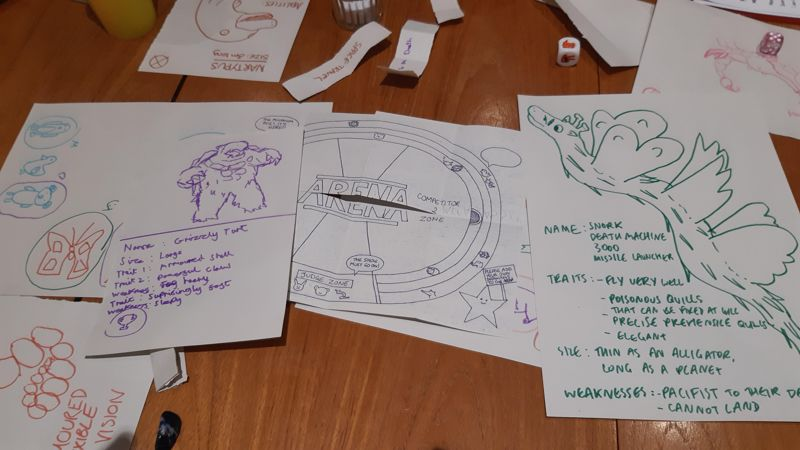
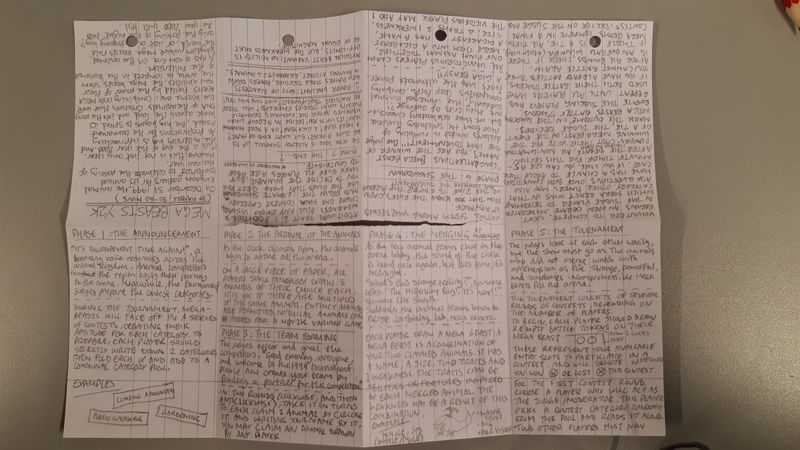
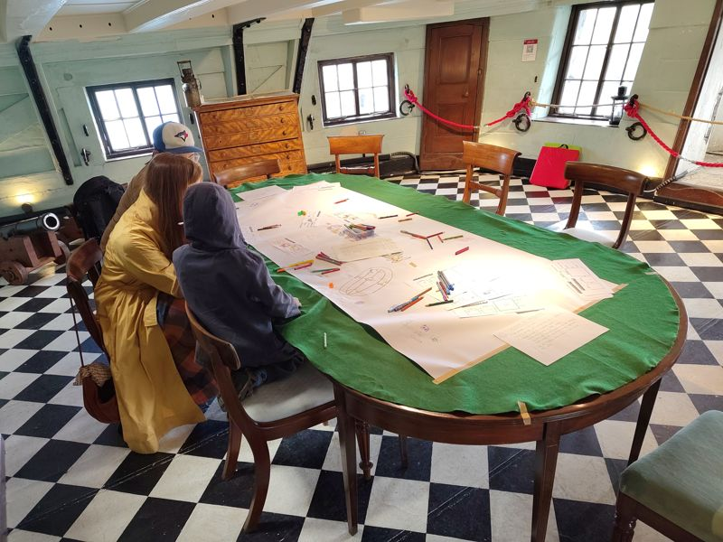
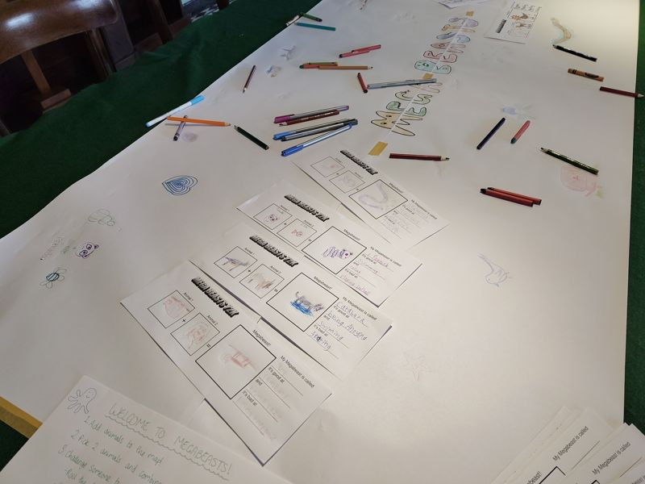
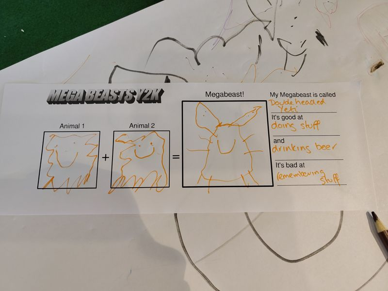

A print-and-play game about drawing, debating, and the year 2000
On December 31 1999, the animal kingdom gathers for its annual tournament to celebrate the passing of the new year. However, this is not just any year. This is the eve of the year 2000, and the millennium bug is approaching.
As preparations for the tournament proceed, the bug begins to spread its havoc across the land and into the very DNA of the animals. Creatures that were two become one, combining into MEGA BEASTS. Fuelled by the power of their new abilities, the MEGA BEASTS storm the arena to compete in the tournament of the millennium.
Is this a new era in the animal kingdom where MEGA BEASTS rule the world, or just a temporary bug? Only the passing of the night into the year 2000 will tell.
I forgot I made this trailer for Mega Beasts until I sat down to update my website today - it's pretty silly, just like Mega Beasts.
I also still think it's one of the best games that I've made. It came together quickly and collaboratively, the basic idea is super simple to understand, and people always seem so happy when they're playing it!
I mean, look at these beasts, what's not to understand?

If you would like to create some mega beasts yourself, you can download the game here: --> Megabeasts Y2K on itch.io
And here's a little post-mortem I wrote up for Mega Beasts when it was included in Indiepocalypse #72 in January 2026! (If you don't know Indiepocalypse, please check it out, it's a very cool monthly curation of obscure and tiny games!)
Why I made Mega Beasts Y2K, and why I like it
One evening at the Dundee Tabletop Playtesting Meetup, I was playing a game of Making It Up As We Go Along in a group, and some rules got added about taking it in turns to draw animals on a shared piece of paper, and circling them to 'claim' them.
I added a rule that you could combine 2 of your claimed animals to form a Mega Beast (which I thought was already a thing, but I must have been thinking of Ultra Beasts or Beast Wars), and it was so much fun that I decided to make it into its own game!
When 2 animals combine into a Mega Beast, they take one strength from each animal. During testing someone suggested they should also have a weakness as a result of the merging - which helped to balance the beasts, and also made battling more fun
(also, during battling people were already saying things like "well, Anterpion is strong, but not very good at climbing so..."), so it made sense to officially add weaknesses into the rules!
I loved making Mega Beasts - the testing and iteration felt super quick and collaborative. I mainly make digital games and it felt very refreshing to make a pen and paper game.
It kind of made me realise that making games doesn't need to involve hours of stress over technical blockers...
The thing I love most about Mega Beasts, is that everyone seems to love it! I've played it with kids, adults, friends, strangers, 'gamers' and 'non-gamers' and we always have a great time.
There are some common combinations of animals, but all the Mega Beasts are unique - everyone has amazing imagination!
I have two favourite moments, which were both a result of people taking the game into their own hands:
I put Mega Beasts out on a table that also had play-doh on it. I left and when I came back, everyone was making Play-doh beasts rather than drawing them. I would never have thought of that!
I showed a kid how to play Mega Beasts at a workshop. His friend came over and I was about to show him too, but then the first kid said "OK! First you have to draw two animals!!" and gave him a pen, and then taught him the whole game.
I want to make more games like that!
Playtest photos
Playtest 1


Playtest 2

Playtest 3


Mega Beast on a boat??
That's right, Mega Beasts Y2K has officially become my first game that I have hosted on a ship! I ran it as a drop in session during the Dundee Play Forum's Celebrate festival in June 2026!
Myself and the beasts boarded the HMS Unicorn to search the depths of the ocean for strange and mysterious creatures. And we certainly found some!



If you would like to see Mega Beasts Y2K on your ship too - get in touch!